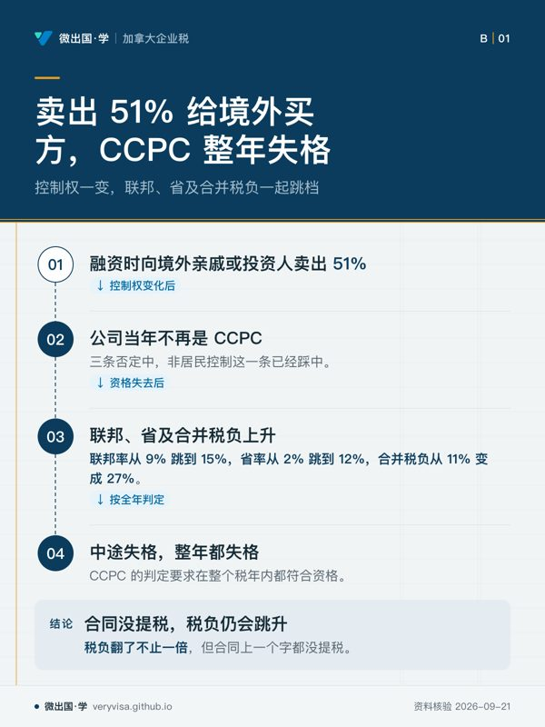
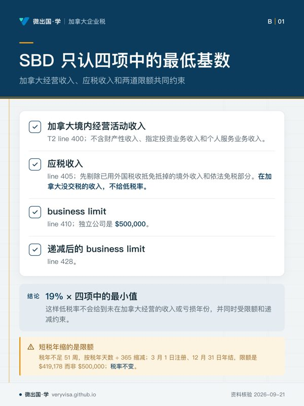
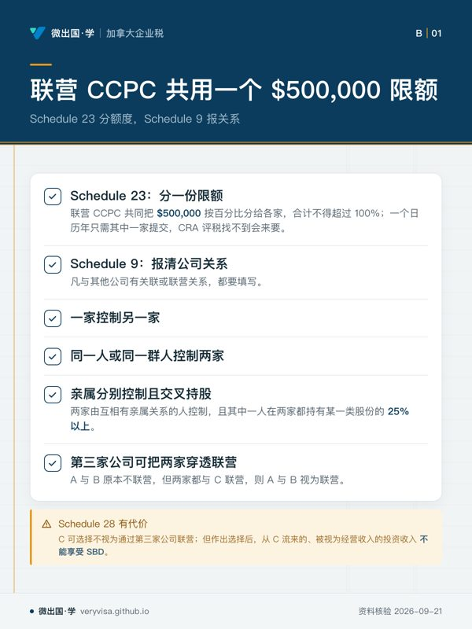

核实日期：2026-09-05｜现行口径：2026 税年（年结落在 2026 年的公司）｜复核：2027-06-30（省级低税率是本页变动最快的一格） 法条依据指向《所得税法》(Income Tax Act, ITA) 现行合订本（Act current to 2026-06-21）；数值指向加拿大税务局 (Canada Revenue Agency, CRA) 与卑诗省财政厅的现行页面。
注册一家公司之后，你手上就有了两个纳税人：你自己，和这家公司。公司有自己的税号、自己的税年、自己的税率表、自己的申报表 T2，以及一套和个人报税完全不同的时间表——报表在年结后六个月才到期，税款却在两个月或三个月就到期。这一页写给三种人：刚把自雇生意装进公司、第一次面对 T2 的小老板；想搞清楚「9% 那个税率到底怎么拿到、什么时候会被拿走」的读者；以及准备做公司税实务的学员。读完你应该能做到三件事：说清一家卑诗省的 CCPC 在 2026 税年到底交多少税、这个数是怎么从 38% 一路降到 11% 的；判断自己名下两家公司要不要分摊那 $500,000 的限额；把年结日、申报日、欠税日、分期预缴日四个时点在日历上标对位置。
一、制度设计与底层逻辑：为什么要给小公司一个低税率
1.1 公司是一个独立的纳税人，这句话的税法后果比想象中多
公司在法律上是独立法人，在税法上就是独立纳税人。它自己算收入、自己算扣除、自己交税，股东只有在真正从公司拿到钱（工资、股息、贷款）时才发生个人层面的税。这句话推出四个后果，每一个都是新手最容易踩的地方。
第一，公司亏损不能拿到个人报表上抵。自雇时期的经营亏损可以直接抵你的工资收入，装进公司之后就不行了——亏损留在公司里，只能抵公司自己往前三年、往后二十年的收入。第二，公司的税年不是历年。《所得税法》s.249(1) 规定，公司的税年就是它的会计期间 (fiscal period)，个人才是历年（加拿大联邦法规库）；s.249.1(1)(a) 又规定，公司的会计期间不得超过 53 周（加拿大联邦法规库）。所以年结日是老板自己选的，选完就锁定了后面所有的期限。第三，没有活动也要报。CRA 的口径是：所有居民公司——包括非营利组织、免税公司、全年零活动的空壳公司——每个税年都要报 T2，哪怕一分钱税都不用交；例外只有三类，免税的王室公司、Hutterite 群体和全年都是注册慈善机构的公司（CRA）。第四，公司交的所得税与利息都不是可扣费用，它们是税后的钱。
1.2 CCPC 不是一个称号，是一个开关
加拿大受控私人公司 (Canadian-controlled private corporation, CCPC) 是全部公司税优惠的总开关。它的定义在 ITA s.125(7)，写法是先给一个正面条件再连着三条否定：它得是一家加拿大公司且是私人公司，然后不得被一个或多个非居民控制、不得被公众公司控制、不得有任何一类股份在指定证券交易所上市（加拿大联邦法规库）。三条否定里踩中任何一条，这家公司就不是 CCPC。

这个开关一关，同时消失四样东西：9% 的联邦低税率、卑诗省 2% 的省低税率、欠税期限从两个月延到三个月的那一个月宽限、以及股东转让公司股份时用终身资本利得豁免的资格。「控制」看的不只是股权比例——CRA 明确说这里的控制既包括法律上的控制 (de jure control)，也包括事实上的控制 (de facto control)（CRA）。一位非居民父亲虽然只持股 40%，但如果实际上能左右董事会，这家公司就可能不是 CCPC。
✕
引入一个海外投资人，可能一次性抹掉一整套优惠
常见剧本：小公司融资，卖 51% 给一位居住在境外的亲戚或投资人。当年这家公司就不再是 CCPC，联邦率从 9% 跳到 15%，省率从 2% 跳到 12%，合并税负从 11% 变成 27%——税负翻了不止一倍，而合同上一个字都没提税。CCPC 的判定是「在整个税年内都是」，中途丢失就整年丢失。
1.3 小企业扣除的本质是递延，不是减免
小企业扣除 (small business deduction, SBD) 让 CCPC 的前一段经营利润按 9% 而不是 15% 交联邦税。它在报表上是一个非退还的税额扣减——只能把应缴税减到零，减不出退税来（CRA）。
它省下来的钱最终是要还的。加拿大的公司税与个人税之间有一套整合 (integration) 设计：公司先交一道税，钱分给股东时，个人这一边先把股息按比例放大再课税，然后给一笔抵免把公司已经交过的那道税还回来。具体地，非合资格股息（也就是用了 SBD 的低税利润分出来的那一类）放大 15%，合资格股息放大 38%（ITA s.82(1)(b)，加拿大联邦法规库）；联邦股息税收抵免则是放大部分的 9/13 与 6/11（ITA s.121，加拿大联邦法规库）。整合想达到的效果是「公司加个人两级合计，约等于个人直接赚这笔钱的税负」，所以 SBD 真正给的不是减免，是把税推迟到分红那一天——钱留在公司里的每一年，你都在用政府的钱做生意。
ℹ️
「约等于」三个字要认真读
抵免率是全国统一的，省级税率各省不同，所以整合永远只是近似。同一笔利润在不同省份、不同年份，走「公司留存再分红」和「直接发工资」两条路的最终税负会差几个百分点，方向还会随税率调整而翻转。任何声称「开公司一定省税」或「一定不省税」的说法都是错的——这是一道要按人、按省、按年算的题，本课的薪酬规划一篇专门处理它。
1.4 谁与谁在博弈
第一个战场是分拆。 既然前 $500,000 享低税率，最直接的想法就是开十家公司拿十个 $500,000。税法用联营 (association) 规则封死了这条路：受同一人或同一群人控制的公司必须共享一个限额（ITA s.125(2)，加拿大联邦法规库）。这条规则的判据不是持股比例，是控制关系，而且 CRA 列了六条判定条件，其中三条把亲属关系加 25% 持股写了进去——你和你兄弟各开一家公司本来不联营，但只要其中一人在另一家里持有任何一类股份的 25%，两家就联营了（CRA）。
第二个战场是把生意变成投资。 低税率只给加拿大境内的经营活动收入 (active business income, ABI)。利息、租金、特许权使用费这类被动收入不但拿不到 SBD，超过一定规模还会反过来吃掉经营收入的低税额度（第二节 2.3）。立法者的逻辑是：低税率是为了让小生意把钱留下来扩大再生产，不是为了让它变成一个低税的投资账户。
第三个战场是规模。 应税资本超过 $10,000,000 的 CCPC，低税额度按直线递减，到 $50,000,000 归零。规则想说的是：这个优惠给的是小公司，不是「私人持有的大公司」。
1.5 错报的三个法律后果
迟报罚是按月走的。 迟交 T2，罚款是申报期限当日未缴税款的 5%，再加每满一个整月 1%，最多 12 个月——首犯封顶 17%。如果 CRA 曾发出申报要求，且前三年内已经因迟报被罚过，罚则升级为 10% 加每月 2%、最多 20 个月，封顶 50%（CRA）。
基数是「未缴税款」而不是「税款总额」。 一家已经足额预缴、期限时不欠税的公司，哪怕迟报半年，迟报罚也是零——但这不代表可以迟报：迟报会让 CRA 的评税推迟、让部分退还性抵免失效，也会把公司推向前面那条「重犯 50%」的轨道。
欠税利息按季度变，而且不可扣。 CRA 每季公布规定利率，2026 年四个季度的欠税利率都是 7%，公司多缴退息都是 3%（CRA）。这个数每季度都会动，所以实务里只记机制不记数：欠税利率＝基准利率加 4 个百分点，公司多缴退息＝基准利率（个人是基准加 2 个百分点）。
二、2026 税年现行规则与数字
2.1 联邦三级税率：38% 是怎么变成 9% 的
联邦公司税不是一个税率，是一串减法。Part I 基本税率 38%，先减 10% 的联邦抵免 (federal tax abatement)（这一段留给省去收），得到 28%；不合资格享 SBD 的那部分收入再减 13% 的一般税率减免 (general tax reduction)，得到 15%；CCPC 合资格的那部分则减 19% 的 SBD，得到 9%（CRA（1、2））。
| 项目 | 2024 税年（考试口径） | 2025 税年 | 2026 税年（现行） | 状态 |
|---|---|---|---|---|
| Part I 基本率 | 38% | 38% | 38% | 长青，2026 未变（CRA） |
| 联邦抵免后 | 28% | 28% | 28% | 长青（CRA） |
| 一般减免后（非 SBD 部分） | 15% | 15% | 15% | 长青（CRA） |
| CCPC 用 SBD 后 | 9% | 9% | 9% | 长青（CRA） |
| SBD 率 | 19% | 19% | 19% | 长青，2019 起为 19%（ITA s.125(1.1)，加拿大联邦法规库） |
| 联邦 business limit | 500,000 元 | 500,000 元 | 500,000 元 | 长青（ITA s.125(2)，加拿大联邦法规库） |
| 合资格零排放技术制造 | 7.5% / 4.5% | 7.5% / 4.5% | 7.5% / 4.5% | 已生效（CRA） |
这七格里没有一格在 2024 到 2026 之间动过，考试口径这一节是准的。CRA 的公司税变化年表里 2026 只有省级一节、没有联邦一节，等于官方自己确认了 2026 税年联邦公司税率与 SBD 参数零变化（CRA）。「查过，没变」也是结论——年度更新时这一格可以直接跳过。
2.2 小企业扣除：四个数取最小，再乘 19%
SBD ＝ 19% × 下面四个数里最小的那一个（CRA、加拿大联邦法规库）：
第一个，加拿大境内经营活动收入，落在 T2 表的 line 400。它不包括财产性收入（利息、股息、特许权使用费、租金）、指定投资业务收入和个人服务业务收入。第二个，应税收入，line 405，而且要先剔除已经用外国税收抵免抵掉的境外收入和依法免税的部分——在加拿大没交税的收入，不给低税率。第三个，business limit，line 410，独立公司是 $500,000。第四个，递减后的 business limit，line 428。
四个里取最小，这个顺序本身就是设计：它保证低税率既不会给到没在加拿大经营的收入，也不会给到亏损年份，还要同时受限额和递减两道闸。
⚠️
2.3 两条递减：考试口径停在了 2022 年之前的旧口径
低税额度会被两件事削减：公司太大（应税资本），和公司太像投资账户（被动收入）。两条不叠加，取大者（ITA s.125(5.1) 的引导句是 "exceeds the greater of"，加拿大联邦法规库）。
| 项目 | 2024 税年（考试口径） | 2025 税年 | 2026 税年（现行） | 状态 |
|---|---|---|---|---|
| 应税资本起削点 | 10,000,000 元 | 10,000,000 元 | 10,000,000 元 | 长青（CRA） |
| 应税资本归零点 | 考试口径写 $15,000,000 | $50,000,000 | $50,000,000 | 考试口径停在 2022-04-07 之前开始的税年的旧口径 |
| 递减公式分母 | 旧口径下应为 $11,250（待核：未回旧版条文原文） | $90,000 | $90,000 | 已生效（ITA s.125(5.1)(a)，加拿大联邦法规库） |
| 被动收入起削点 | 50,000 元 | 50,000 元 | 50,000 元 | 长青（CRA） |
| 被动收入归零点 | 150,000 元 | 150,000 元 | 150,000 元 | 长青（CRA） |
| 每 $1 超额被动收入削减 | $5 | $5 | $5 | 长青（ITA s.125(5.1)(b)） |
| 两条递减的关系 | 取大者 | 取大者 | 取大者 | 长青（加拿大联邦法规库） |
这是本页最重要的一处考试口径错位。 考试口径写的是「应税资本在 $10,000,000 到 $15,000,000 之间按比例削减，$15,000,000 及以上归零」；现行规则是 $10,000,000 到 $50,000,000 直线递减，$50,000,000 归零，改动自 2022 年预算，适用于 2022 年 4 月 7 日之后开始的税年。CRA 的 T2 指南把新旧两版并排印着，旧的那一句原文写着「For tax years starting before April 7, 2022, the range is $10 million to $15 million」——所以这不是考试口径抄错，是考试口径停在了一个已经作废四年的口径上（CRA）。
条文本身就是证据。ITA s.125(5.1)(a) 的公式是 A × B ÷ $90,000，其中 B ＝ 0.225% × (C − $10 million)，A 是本来的 business limit、C 是上一税年的应税资本。把 C ＝ $50,000,000 代进去：B ＝ 0.225% × $40,000,000 ＝ $90,000，比值恰好是 1，限额被全额削掉。分母 $90,000 这个数本身就锁死了归零点是 $50,000,000（加拿大联邦法规库）。
方向性后果很大。 一家应税资本 $26,000,000 的家族制造公司，按考试口径算 SBD 是零，按现行规则还剩 $300,000 的低税额度——差一年将近五万加元的税（第六节案例三）。
被动收入那条的公式是 D ÷ $500,000 × 5 × (E − $50,000)：独立公司 D ＝ $500,000，比值为 1，于是上一税年每多 $1 超过 $50,000 的调整后被动投资收入，本年就少 $5 的低税额度，被动收入到 $150,000 时额度归零。这条规则的完整机制、什么算「调整后」、以及它与退还性股息税的互动，在本板块下一篇（ca-corporate-02-passive-income-grind）里展开。
两组端点别混用。 应税资本那组是 $10,000,000 起削、$50,000,000 归零、分母 $90,000；被动收入那组是 $50,000 起削、$150,000 归零。前者量的是公司规模，后者量的是公司有多像投资账户，计量口径、数据来源和附表都不同（应税资本随报 Schedule 33／34／35，被动收入走 Schedule 7）。底稿上两条递减要各写一行「适用／不适用」和理由，不适用也写，别留白——留白会让复核的人以为漏算。2026-09-13 回核：ITA 合订本已更新到 2026-07-21，s.125(2) 的 $500,000、s.125(5.1)(a) 的 $90,000 与 $10 million、s.125(5.1)(b) 的 $50,000 文字未变（加拿大联邦法规库）。
🔧
两条递减都看「上一年」和「整个联营组」
应税资本用的是上一税年的数，被动收入用的也是上一税年的数，而且两者都要把全部联营公司加总。所以「今年把投资挪出去」救不了今年，只能救明年；而「把投资放到另一家自己控股的公司里」通常什么也救不了，因为那家公司多半和这家联营。应税资本合计超过 $10,000,000 的，还要随报 Schedule 33／34／35（CRA）。
2.4 联营与限额分摊：一张表决定几家公司分几份
联营 CCPC 必须共同填一张 Schedule 23，把那一个 $500,000 按百分比分给各家，合计不得超过 100%；一个日历年里只需要其中一家提交，但 CRA 评税时如果找不到这张表，会主动来要（CRA）。另外，凡与其他公司有关联或联营关系的，都要填 Schedule 9 把关系报清楚。
CRA 列的六条联营判定条件，可以压成三句话记：一家控制另一家；同一人或同一群人控制两家；两家分别由互相有亲属关系的人控制，且其中一人在两家里都持有某一类股份的 25% 以上（后一句涵盖第 3 到第 5 条的各种变体）。第六条是穿透第三家公司：A 和 B 本来不联营，但两家都与 C 联营，则 A 与 B 视为联营——除非 C 提交 Schedule 28 作「不视为通过第三家公司联营」的选择，而这个选择有代价：作出选择之后，从 C 那里流过来的、被视为经营收入的投资收入不能享受 SBD（CRA（1、2））。
2.5 已宣布但还不是规则的一条
2025 年预算提出对分层公司结构 (tiered corporate structures) 的递延限制，收紧通过多层控股公司延后个人层面课税的空间。它写在实施法案 C-31 里，到本页核实日仍在众议院委员会审议、尚未御准（Parliament of Canada）。没有御准就不是规则，2026 税年的产物里它只能作提示出现。本课的三态纪律是：已生效 / 已宣布 / 拟议，三者永不混写。
同一部法案里还有一条对小公司更实际的：制造加工建筑的临时即时费用化，同样是「已宣布」。而加速投资激励与即时费用化的恢复已经随 C-15 生效，适用于 2025 年 1 月 1 日及以后取得的合资格资产——同一份预算里的措施，生效状态可以完全不同，必须逐条查，不能整份预算一起当真。
三、实务流程：一张表、一套附表、四个时点
3.1 从财报到 T2：GIFI 这一步
T2 不是从零填起的，它是从公司的财务报表接进来的。这个接口叫 GIFI（General Index of Financial Information，财务信息通用索引）：每一个会计科目对应一个标准代码，把资产负债表填进 Schedule 100、损益表填进 Schedule 125、再用 Schedule 141 回答一组关于「财报是谁做的、做到什么程度」的问题。新公司的第一份报表还要附 Schedule 101 期初资产负债表（CRA）。
2023 年之后开始的税年，除保险公司、非居民公司、以功能货币申报的公司和 s.149 免税公司外，T2 一律电子申报；应电子申报而没有做的，罚 $1,000（ITA s.162(7.2)）。电子申报之后不需要另交纸质财报和附注——附注和会计师报告可以随电子申报一起传（CRA）。CRA 对电子申报的服务承诺是 45 天内处理 95% 的 T2（CRA）。
GIFI 之所以存在，是因为会计利润不等于税务利润。GIFI 把会计的数原样搬进来，然后由 Schedule 1 负责把两者之间的差异一笔笔调平：把不可扣的加回去（所得税拨备、账面折旧、餐费娱乐费中不可扣的那一半、俱乐部会费、超限车辆费用、罚款利息），再把税法允许的减下来（Schedule 8 算出来的资本成本折让 CCA、Schedule 6 算出来的应税资本利得口径差异）。Schedule 1 的结果就是税务净收入，再减掉捐赠（Schedule 2）、公司间股息（Schedule 3）、亏损结转（Schedule 4），得到应税收入。
3.2 T2 附表地图
| 附表 | 管什么 | 什么时候必须有 |
|---|---|---|
| Schedule 100 / 125 / 141 | 资产负债表 / 损益表 / 财报附加信息（GIFI） | 有账面数据就要（全年零活动的可免） |
| Schedule 101 | 期初资产负债表 | 新公司第一份报表 |
| Schedule 1 | 会计净收入调整到税务净收入 | 几乎所有公司 |
| Schedule 2 / 3 / 4 | 捐赠 / 股息收付 / 亏损结转与回抵 | 有对应事项时 |
| Schedule 6 / 8 | 资本财产处置 / 资本成本折让 | 有处置或有折旧资产时 |
| Schedule 7 | 合计投资收入与合资格 SBD 的收入 | 有被动收入的 CCPC |
| Schedule 9 | 关联与联营公司清单 | 与任何公司有关联或联营 |
| Schedule 23 | 联营 CCPC 分摊 business limit 的协议 | 所有联营 CCPC（每日历年一份） |
| Schedule 28 | 选择不通过第三家公司视为联营 | 想切断穿透联营时 |
| Schedule 33 / 34 / 35 | 在加拿大使用的应税资本 | 应税资本超过 $10,000,000 |
| Schedule 50 | 持股 10% 以上的股东（最多列 10 名） | 私人公司 |
| Schedule 427 | 卑诗省公司税计算 | 在 BC 有常设机构 |
T2 表本身在 CRA 的编号体系里是 Schedule 200，页 4 是 SBD 的计算区（line 400 / 405 / 410 / 422 / 426 / 428，结果填 line 430），页 8 是 Part I 税的汇总区，SBD 在那里从应缴税里扣下去（CRA）。
ℹ️
Schedule 50 是一张「谁在开这家公司」的名片
只要是私人公司，持有普通股或优先股 10% 以上的股东都要报上去，最多列十名（CRA）。它不参与算税，却是 CRA 判定控制、联营、股东贷款、股息归属的第一手材料——填错这张表，后面所有关于「谁控制谁」的判断都会被质疑。
3.3 四个时点，四个不同的日子
第一个是年结日，老板自己选，会计期间不得超过 53 周。第二个是申报截止日：年结后六个月。 年结落在月末的，就是第六个月的月末；年结不在月末的，是第六个月的同一日（CRA）。3 月 31 日年结 → 9 月 30 日申报；10 月 2 日年结 → 次年 4 月 2 日申报。
第三个是欠税截止日：年结后两个月，而不是六个月。这是新老板最常踩的坑：报表还没做，钱已经该交了。满足下面全部条件的 CCPC 可以延到三个月：整个税年都是 CCPC；本年申报了 SBD、或上年获准了 SBD；并且——不联营的看自己上一税年的应税收入没超过当年的 business limit，联营的看全组上一日历年结束的那些税年的应税收入合计没超过它们的 limit 合计（CRA）。
第四个是分期预缴日。 Part I、VI、VI.1、XIII.1 四类税合计，上一年或本年任一年不超过 $3,000 就免分期（CRA）。超过就要按月缴；符合四个并列条件的可以改按季度缴：是 CCPC；前十二个月完美合规（GST/HST、源头扣缴、CPP、EI、所得税全部按时报缴）；连同全部联营公司应税收入不超过 $500,000；连同全部联营公司在加拿大使用的应税资本不超过 $10,000,000（CRA）。
⚠️
首期不是「一个月后」，是「一个月差一天」
CRA 的原话是 one month less a day from the starting day of your tax year（CRA）。税年从 1 月 1 日起的，首期是 1 月 31 日，看起来像月末所以没人出错；但税年从 11 月 11 日起的，首期是 12 月 10 日，不是 12 月 11 日、更不是 12 月 31 日。季度缴同理，是「一个季度差一天」。 新公司第一个税年不需要分期预缴，但第二个税年的首期，往往在第一年的报表还没做完之前就到了。
另一处容易漏：中途丢掉季度缴资格（例如一次 GST 迟缴打破完美合规）的公司，允许把当季那一期交完，从下一季开始转月缴（CRA）。公司税的缴款节奏被销售税和薪资的合规记录绑着，这是三套制度之间少见的硬联动。
四、联邦之外：卑诗省这一格怎么走
省级公司所得税没有自己的申报表。在 BC 有常设机构的公司，用同一份 T2 加一张 Schedule 427 就把省税一起算了，不需要单独的省级税号（BC 省政府）。
| 项目 | 2024 税年（考试口径） | 2025 税年 | 2026 税年（现行） | 状态 |
|---|---|---|---|---|
| BC 小企业率 | 2% | 2% | 2% | 长青，2017-04-01 起未变（BC 省政府） |
| BC 一般率 | 12% | 12% | 12% | 长青，2018-01-01 起未变（BC 省政府） |
| BC business limit | 500,000 元 | 500,000 元 | 500,000 元 | 长青，2010-01-01 起未变（CRA、BC 省政府） |
| CCPC 合并税负（限额内） | 11% | 11% | 11% | 已生效（9% ＋ 2%） |
| 一般合并税负 | 27% | 27% | 27% | 已生效（15% ＋ 12%） |
| BC 制造加工投资税收抵免 | 无此2026新项目 | 无此2026新项目 | 2026-04-01 起合资格净支出适用15%；每年支出上限200万元，关联公司共享 | 已生效：BC ITA ss.110.1–110.7（bclaws.gov.bc.ca） |
制造加工抵免要同时核主体、资产、日期。公司须全年为 CCPC、当年在 BC 有常设机构；合资格新资产的取得、支出与可供使用均有日期限制。2026-04-01 至 2031-03-31 支出期的税率为15%，2031年4月后按法定分段递减，不能把15%写成永久税率。净支出要扣指定援助，且只在资产达到可供使用的税年申领；s.110.7 的视同已付款机制支持退还性（bclaws.gov.bc.ca）。
示例：2026年合资格新设备净支出100万元，当年可供使用，其他资格均满足且未占用关联公司共同限额，则本项抵免为15万元。这是抵免金额，不是额外15万元费用扣除；之后出售、改用途或移出BC还可能触发 s.110.5 追回。
BC 的关键机制是：它的低税率没有自己的资格判据，直接挂在联邦 SBD 上。 省页的原话是「适用于有合资格享联邦小企业扣除的经营活动收入的 CCPC」（BC 省政府）。推论有两层：一，联邦那边因为应税资本或被动收入被削掉的额度，BC 这边同步削掉，一次踩线两处受损——不存在一套另行判断的 BC 被动收入规则，底稿里把 BC 栏写成「与联邦分开判断」反而会算错（BC 省政府，2026-09-13 回核页面仍为 2025-04-30 版）；二，BC 不另设省级 business limit，所以不会出现「联邦限额和省限额不一样」的双轨算法——这一点不能推广到全国，新斯科舍省的限额是 $700,000、爱德华王子岛与萨斯喀彻温省是 $600,000（CRA）。被动收入递减也不是各省都跟：安大略省只跟联邦的应税资本递减，不跟 $50,000–$150,000 的被动投资收入递减，所以同一家公司可能丢了联邦 9% 的额度，却仍保有安大略省的低税率。
跨期还有一条：税率或限额在税年中间变了的，要按各段实际适用的天数分摊计算（BC 省政府）。BC 这几年没触发过，但隔壁省 2026 年就触发了。
4.1 官方页会自己跟自己打架，这一处正在打
| 省 | CRA 公司税率省表（页面日期 2025-05-30） | CRA 公司税变化年表（页面日期 2026-06-12） | 2026 税年该怎么用 |
|---|---|---|---|
| Newfoundland and Labrador | 2.5% | 2.0%，追溯至 2026-01-01 | 用 2.0% |
| Ontario | 3.2% | 2.2%，2026-07-01 起 | 跨期分段：上半年 3.2%、下半年 2.2% |
| British Columbia | 2% | 无变化 | 用 2% |
两张页都是 CRA 官方、都是现行页，给出的数不一样（CRA（1、2））。采信规则很简单：带立法件与日期的那一页优先——变化年表每条前面都挂着预算日期或法案号，省表没有。更要紧的是问题本身要问对：不是「哪个数对」，而是「这一页是哪一天的快照」。省表页脚写着 2025-05-30，它就只能代表那一天。
🔧
越容易搜到的那一页，越可能是旧的
搜索引擎排在最前面的通常是那张总表，而变化年表要多点两下才到。做省级税率这一格时，永远两页都开，且以带日期的那一页为准。 这条纪律的成本是每次多一次抓取，收益是不会把一整年的省税算错。
五、历史变革：这套规则是怎么长成现在这样的
联邦低税率这一档在 2019 年定型。 ITA s.125(1.1) 把 SBD 率写成「2018 年之后的天数按 19%」（加拿大联邦法规库），配合 28% 的抵免后基本率，就得到今天的 9%。此前它是分年往下走的一串数，2019 年之后再没动过——七个税年不变，这在本课里是罕见的稳定。
BC 这两个率也在同一个窗口定型： 小企业率 2017 年 4 月 1 日从 2.5% 降到 2.0%，一般率 2018 年 1 月 1 日从 11.0% 升到 12.0%，此后至 2026 税年再未变动（BC 省政府）。注意方向相反——省级政策在同一时期一边补贴小公司、一边向大公司加价，这不是笔误，是取向。
大 CCPC 的门槛在 2022 年放宽。 应税资本递减的归零点从 $15,000,000 抬到 $50,000,000，适用于 2022 年 4 月 7 日之后开始的税年（CRA）。政策理由是通胀与资产价格已经让原来的门槛把很多真正的中小企业挡在外面。考试口径停在了这次改动之前，这一条是本页写作的首要理由。
被动收入递减是 2018 年那一轮私人公司税制改革的产物。 那一轮改革回应的问题是：低税率让 CCPC 成了一个高效的储蓄工具，同样一笔钱在公司里滚存比在个人手里滚存有明显优势。立法者没有取消低税率，而是加了这条「你越像投资账户、低税额度越少」的递减——这是一条典型的「不禁止，只定价」的规则。
2026 年的动静全在省一级。 纽芬兰与拉布拉多把低税率从 2.5% 降到 2.0%，并已排好 2027 年降到 1.5%、2028 年降到 1% 的时间表；安大略把低税率从 3.2% 降到 2.2%；新斯科舍把金融机构资本税从 4% 提到 6%（CRA）。省际竞争已经取代联邦调整，成为公司税率变动的主要来源——年度更新时，联邦那一格通常可以跳过，省级那一格必须逐省重扫。
六、案例
案例一 · 温哥华的两人咨询公司：11% 是怎么来的
情景（示例）。 陈先生与合伙人在温哥华注册了一家 IT 咨询公司，两人都是加拿大居民、各持 50%，公司没有其他股东、不与任何公司联营、应税资本远低于千万级、没有投资收入。2026 税年年结 12 月 31 日，全部收入都是加拿大境内经营活动收入，应税收入 $320,000。
适用规则。 公司是 CCPC；SBD ＝ 19% × min（line 400 的 $320,000、line 405 的 $320,000、line 410 的 $500,000、line 428 的 $500,000）＝ 19% × $320,000 ＝ $60,800。
算出的数。 联邦：38% × $320,000 ＝ $121,600，减 10% 抵免的 $32,000 得 $89,600，再减 SBD 的 $60,800，联邦应缴 $28,800——正好是 9%。BC：2% × $320,000 ＝ $6,400。合计 $35,200，合并税负 11%。 作为对照：如果这家公司因为引入了一位非居民股东而不再是 CCPC，同一笔收入要交 15% ＋ 12% ＝ 27%，也就是 $86,400，多交 $51,200。
日历。 年结 2026-12-31 → 欠税日 2027-03-31（符合三个月宽限）→ 申报日 2027-06-30。报表还有三个月才到期，钱已经该交了。
如果这是第一年。 假设公司是 2026 年 3 月 1 日注册、当年 12 月 31 日首次年结，税年 306 天，business limit ＝ $500,000 × 306 ÷ 365 ＝ $419,178。$320,000 仍在限额内，SBD 不受影响；但如果当年应税收入是 $460,000，就有 $40,822 落到 15% ＋ 12% 上。第一年不需要分期预缴，第二年要，而第二年的首期常常在第一年报表做完之前就到了。
常见错报。 把 $500,000 当成「免税额」，以为前五十万不用交税——它是享受低税率的上限，不是免税额；限额内的收入照样交 11%。
案例二 · 素里的一对夫妻两家公司：联营还是不联营
情景（示例）。 王先生 100% 持有一家装修公司 A，王太太 100% 持有一家清洁公司 B，两人是配偶。A 的 2026 税年应税收入 $380,000，B 是 $260,000，两家都全是加拿大经营活动收入。
适用规则。 光是「配偶各开一家公司」不构成联营——判定条件要求的是：两家分别由互相有亲属关系的人控制，并且其中一人在两家公司里都持有某一类股份（指定股份除外）的 25% 以上（CRA）。王先生在 B 里持股为零，条件不成立，两家各自享有完整的 $500,000。
算出的数（不联营）。 $380,000 与 $260,000 都在各自限额内，全部按 11% 计：合计 $70,400。
变量一改，结论就翻。 假设为了让王先生能签合同，公司给了他 B 的 30% 普通股。这时条件成立，两家联营，必须共填一张 Schedule 23 分摊那一个 $500,000。假设按 $300,000 / $200,000 分：A 有 $80,000、B 有 $60,000 共 $140,000 落到一般率，多交 $140,000 × 16% ＝ $22,400。
常见错报。 只报了 Schedule 9 却没报 Schedule 23，或者两家各填 100%。合计超过 100% 的分摊 CRA 会直接调整；而一张都不填，CRA 会来要，要不到就自行分配。
案例三 · 列治文的家族制造公司：考试口径算法差了四万八
情景（示例）。 一家列治文的家族制造公司，CCPC，无联营，上一税年在加拿大使用的应税资本 $26,000,000，2026 税年应税收入 $700,000，全部是经营活动收入；上一税年调整后被动投资收入 $80,000。
按现行规则算。 应税资本那条：B ＝ 0.225% × ($26,000,000 − $10,000,000) ＝ $36,000；递减额 ＝ $500,000 × $36,000 ÷ $90,000 ＝ $200,000。被动收入那条：5 × ($80,000 − $50,000) ＝ $150,000。两条取大者，取 $200,000（不是相加的 $350,000）。递减后 business limit ＝ $500,000 − $200,000 ＝ $300,000。SBD ＝ 19% × min($700,000, $700,000, $500,000, $300,000) ＝ 19% × $300,000 ＝ $57,000。
按考试口径算法算。 应税资本 $26,000,000 已经超过考试口径写的 $15,000,000 归零点 → business limit 为零 → SBD 为零。
差多少。 $300,000 这一段按 11% 还是按 27% 交，差 $300,000 × 16% ＝ $48,000，一年。这家公司还要随报 Schedule 33（应税资本超过 $10,000,000）。
常见错报。 把两条递减相加。条文写的是 exceeds the greater of，取大者；相加会把这家公司的限额算成 $150,000，SBD 少算 $28,500。
七、常见错报与自查清单
- 把 $500,000 当免税额。 识别方法：看有没有人说「前五十万不用交税」。它是享低税率的上限，限额内照样按 11%（联邦 9% ＋ BC 2%）交税。
- 以为报表和税款是同一个截止日。 识别方法：把年结日加两个月、加三个月、加六个月三个日期都写在日历上。先到期的是钱，不是表。
- 短税年不摊 business limit。 识别方法：数一数这个税年有多少天，只要不足 51 周就必须按天数 ÷ 365 摊，尤其是公司成立的第一年和变更年结日的那一年。
- 两条递减相加。 识别方法：看计算底稿里有没有把应税资本递减额和被动收入递减额加在一起。条文是取大者。
- 用考试口径的 $15,000,000 判归零。 识别方法：只要底稿里出现 $15,000,000 或 $11,250 这两个数，整段按 $10,000,000–$50,000,000 与分母 $90,000 重算（2022 年 4 月 7 日之前开始的税年除外）。
- 两条递减用了本年的数。 识别方法：看应税资本和被动收入取的是哪一年——两条都看上一税年，而且都要把全部联营公司加总。
- 配偶各持一家就认定联营（或反过来，交叉持股了还当不联营）。 识别方法：先问「有没有人在两家里都持有某一类股份的 25% 以上」，再问「有没有第三家公司把两边穿起来」。
- 联营了却不填 Schedule 23，或者各填 100%。 识别方法：把所有联营公司分到的百分比加起来，必须不超过 100，且一个日历年至少有一份在 CRA 手上。
- 零活动就不报 T2。 识别方法：公司只要还没注销，就每个税年都要报，哪怕账面全零、税额为零。例外只有免税王室公司、Hutterite 群体和全年注册慈善机构三类。
- 把公司交的所得税和欠税利息当费用扣掉。 识别方法：看 Schedule 1 有没有把所得税拨备加回去。加不回去，Schedule 1 就是错的，后面的应税收入、SBD、省税会一路错下去。
- CCPC 身份变了却没意识到。 识别方法：这一年有没有新股东是非居民或公众公司、有没有任何一类股份上市。判定要求「整个税年都是」，中途失去就整年失去，9%、2%、三个月宽限一起没。
- 省级税率照抄那张总表。 识别方法：看引用的页面日期。跨省客户务必再开一次 CRA 的公司税变化年表，2026 税年至少有两个省的低税率与总表对不上。
下一步练习：122
术语双语对照
| English | 中文 | 一句话机制 |
|---|---|---|
| T2 Corporation Income Tax Return | T2 公司所得税申报表 | 公司唯一的联邦所得税申报表；省税同表附加省级附表 |
| Canadian-controlled private corporation (CCPC) | 加拿大受控私人公司 | 加拿大私人公司，且不被非居民或公众公司控制、无股份上市；全部公司税优惠的总开关（ITA s.125(7)） |
| small business deduction (SBD) | 小企业扣除 | 19% × 四个数取最小，从 Part I 税里扣，把 28% 打到 9%；非退还 |
| business limit | 经营限额 | 享低税率的收入上限，联邦 $500,000；短税年按天数 ÷365 摊 |
| active business income (ABI) | 经营活动收入 | 经营所得，不含利息、股息、租金、特许权使用费等财产性收入；填 line 400 |
| adjusted aggregate investment income (AAII) | 调整后合计投资收入 | 被动收入递减的计量口径，用上一税年的数，全联营组加总 |
| taxable capital employed in Canada | 在加拿大使用的应税资本 | 大 CCPC 递减的计量口径；超 $10,000,000 要随报 Schedule 33/34/35 |
| business limit reduction | 限额递减 | 应税资本与被动收入两条，取大者不叠加（ITA s.125(5.1)） |
| associated corporations | 联营公司 | 受同一控制的公司必须共享一个 business limit，判据是控制不是持股比例 |
| de jure control / de facto control | 法律控制 / 事实控制 | 前者看表决权多数，后者看实际影响力；两者都算控制 |
| federal tax abatement | 联邦抵免 | 从 38% 里减 10%，把这一段税基让给省，得到 28% |
| general tax reduction | 一般税率减免 | 对不享 SBD 的收入再减 13%，得到 15% |
| integration | 整合 | 公司先交、个人后补，两级合计约等于个人直接赚这笔钱的税负 |
| dividend gross-up | 股息毛额化 | 个人收到应税股息先放大再课税；非合资格 15%、合资格 38%（ITA s.82(1)(b)） |
| dividend tax credit (DTC) | 股息税收抵免 | 抵掉公司已交的那道税；联邦为毛额部分的 9/13 与 6/11（ITA s.121） |
| fiscal period / tax year | 会计期间 / 税年 | 公司的税年就是它的会计期间，不得超过 53 周（ITA s.249、s.249.1） |
| balance-due day | 欠税截止日 | 年结后两个月；符合条件的 CCPC 延到三个月 |
| tax instalments | 分期预缴 | 四类税合计超 $3,000 就要按月缴；符合四条件的 CCPC 可按季 |
| perfect compliance history | 完美合规记录 | 前 12 个月 GST/HST、源头扣缴、CPP、EI、所得税全部按时；季度缴的前提 |
| GIFI (General Index of Financial Information) | 财务信息通用索引 | 把财报科目映射成标准代码填进 T2 的接口 |
| Schedule 100 / 125 / 141 | 资产负债表 / 损益表 / 财报附加信息 | GIFI 三张表；新公司另附 Schedule 101 期初资产负债表 |
| Schedule 1 | 税务净收入调整表 | 把会计净收入加回不可扣、减去税法扣除，得到税务净收入 |
| Schedule 8 | 资本成本折让表 | 税法折旧，替代账面折旧 |
| Schedule 9 | 关联与联营公司表 | 与任何公司有关联或联营关系就要填 |
| Schedule 23 | 联营 CCPC 限额分摊协议 | 把一个 $500,000 按百分比分给各家，合计不超过 100% |
| Schedule 28 | 不通过第三家公司联营的选择 | 切断穿透联营，代价是那部分视同经营收入不享 SBD |
| Schedule 50 | 股东信息表 | 私人公司报持股 10% 以上的股东，最多十名 |
| Schedule 427 | 卑诗省公司税计算表 | BC 省税随 T2 一起报，不需要单独的省级税号 |
| royal assent | 御准 | 法案成为法律的那一刻；未御准的措施只能写「已宣布」 |
来源
法条（现行合订本，Act current to 2026-06-21）：s.125(1) 与 (1.1) 的 SBD 与 19% 率、s.125(2) 的 $500,000、s.125(5)(b) 的短税年摊分、s.125(5.1) 的两条递减公式、s.125(7) 的 CCPC 定义（加拿大联邦法规库）· s.249(1) 公司税年即会计期间（加拿大联邦法规库）· s.249.1(1)(a) 会计期间不得超过 53 周（加拿大联邦法规库）· s.82(1)(b) 股息毛额化（加拿大联邦法规库）· s.121 股息税收抵免（加拿大联邦法规库）· s.162(1)、(2) 迟报罚（CRA）。
CRA 现行页面：公司税率与省表（CRA）· 规定利率（CRA）· 公司税变化年表 2026 省级节（CRA）· T2 指南「开始之前」的申报与缴款期限、罚则（CRA）· T2 指南第 2 章 GIFI 与信息附表（CRA）· T2 指南第 4 章 SBD 与两条递减（CRA）· 公司分期预缴的季度资格与到期日（CRA）。
卑诗省：公司税率与经营限额页（BC 省政府）。立法进度：C-31 仍在委员会审议（Parliament of Canada）。
本页知识卡
不看正文也能拿到这一节的核心内容：先看导读，再看图。点图放大，左右翻页。
- 先看先读资格门槛，再看失格会连带损失什么。
- 易漏持股少也不代表安全；实际左右董事会同样会影响资格。
- 下一步去练习判断股权与董事会安排；疑难控制结构问持牌专业人士。

- 先看沿融资交易看资格变化，再看税率与全年效应。
- 易漏关键不是年末状态；年中发生控制变化，也会影响这一整个税年。
- 下一步去练习先标交易日期；控制权安排再问持牌专业人士。

- 先看先定位四个候选基数，最终只拿最低者参与计算。
- 易漏首个会计期若不足完整年度，调整的是可覆盖利润上限，不是百分比。
- 下一步去练习重算新公司首年案例；特殊收入分类请持牌专业人士复核。

- 先看先看额度怎么在多家公司间共享，再检查哪些控制关系会把公司连起来。
- 易漏两家公司即使彼此没有直接关系，也可能因共同连到第三家公司而被并在一起。
- 下一步去练习画控制关系图；复杂亲属持股与选择事项问持牌专业人士。